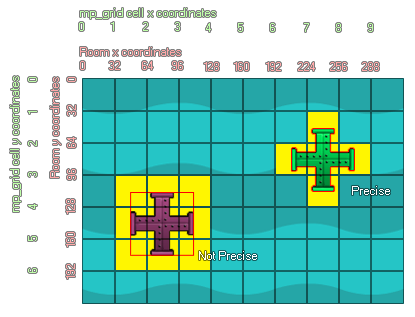

mp_grid_add_instances
Marks all cells that an instance of the indicated object overlaps as being forbidden.
Syntax :
mp_grid_add_instances(id, obj, prec);
| Argument | Description |
|---|---|
| id | Index of the mp_grid that is to be used |
| h | Object index, or instance id, of the instances to be added into the mp_grid |
| v | Whether the check is based on pixel-perfect collisions (true = slow) or its bounding box in general (false = fast). |
Returns: N/A
Description
This function uses the instance collision mask (decided by the sprite properties or the mask index of the vcalling instance) to mark cells as forbidden or not, where forbidden cells cannot be crossed by any of the
pathfinding functions. You can specify in the function whether to consider precise collisions or not and the forbidden cells marked will change depending on this setting. This image illustrates this behaviour :

The two instances above have been added into the mp_grid using the mp_grid_add_instances function with precise being set as true. As you can see the, green instance has only marked the grid squares it
"touches" as forbidden, due to the fact that its sprite mask is also set to precise. However the second instance has marked other cells too which don't appear to be touching. This is because the sprite
mask is not set to precise, meaning that even if you are using the precsie setting in the function, only the bounding box of the sprite will be considered. This is also what would happen if you set the
precise argument of the function to false - even instances with a precise sprite mask will be added into the grid based on their bounding boxes.
Example :
mp_grid_add_instances(grid, obj_Wall, 1);
The above code will add all instances of "obj_Wall" into the mp_grid indexed in the variable "grid" using the precise collision mask rather than the bounding box.